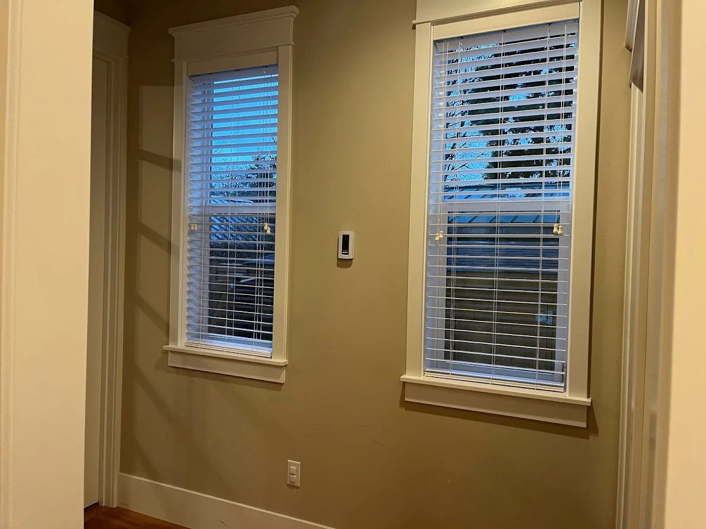
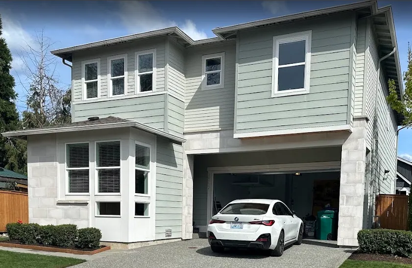

Windows
Good quality windows that are easy to maintain, clean. Stay standard size as much as possible. Something easy to get window treatments.
Version I SVG only - November 8: the owner requests windows in the new upstairs diagram. There are 18 provisional exterior openings /28 conceptual units: ten 60-inch paired openings with two 30-inch units, six 30-inch singles and two 36-inch laundry singles. Laundry retains its east window and adds a centered window on its south/bottom exterior wall. Primary has two west pairs and one north pair; Bedroom 2 has one east pair on its exposed north section, not its loft-shared wall. Bedroom 3 has a west pair and centered front pair, Bedroom 4 a centered front pair, loft north/east pairs and primary bath a north pair. Singles serve Baths 2/3, stairs, Closet 2 north, Closet 4 front and Bath 4's exposed south section east of Bedroom 4. The two exterior closet windows are centered on their rooms; Primary closet, Closet 3 and linen remain interior. Sill/head intent is 36/96 inches. No roof or furnace glazing. These are diagram proposals, not selected products or verified egress; confirm sizes, combinations, operation, closet storage, privacy/safety glazing, reach, headers and flashing. The adopted Version H 3D model and takeoff below are unchanged.

Current Version H inventory - November 6: twelve upstairs openings containing 17 units; actual furnished whole-house takeoff 27 openings / 47 units, 39 casements and 8 fixed pictures, no roof windows. Ground's 15 openings / 30 units remain unchanged. Front pairs center x6.175/25.025 at z53.8; rear bath/WC plane is z7.4. Primary west pair groups, bath, Bath 2 north, two Bedroom 2 east pair groups, stair and Bedroom 3 west agree with furnished hosts and exterior masonry. Laundry east window is replaced by the attic doorway; no facade-only attic glazing. Retain white Fibrex Andersen 100 Series intent, front-only grilles and existing order/installation holds. H's concept dimensions are not verified SKUs. Exact frame/rough-opening sizes, combinations, handing, egress, wet/privacy/safety glazing and reach require supplier/professional confirmation. Earlier Version A/loft counts below are historical. See current model.
Dining wall move retained, November 8: rear 72 × 60-inch window moves with its wall to z1.9. The shortened garden-side wall uses a 48 × 60-inch two-casement concept at z4.45; 36/96-inch sill/head and closed 96-inch patio door stay fixed. H restoration does not change these downstairs units. Exact product/rough opening, end piers, framing, flashing and operation remain unapproved.
Shutters removed — October 30: remove all exterior shutters, including historical loft south. The October 28 study is superseded. Keep white windows, grilles, openings and masonry trim unchanged.
Historical larger upstairs placement - superseded: the fifteen-opening upstairs and 53-unit whole-house schedule belonged to the removed loft study. Use the Version H takeoff above and table below. Four front single-casement concept openings retain 36/96-inch sill/head datums; changed hosts and pair centers are not new product/order approval.
Current vertical wall-window selection: Andersen 100 Series intent for the 27 wall openings on both furnished floors and all elevations: White Fibrex composite inside/outside, no decorative grilles except the specified front pattern, side-hinged casements and stationary pictures as modeled. Door-leaf glazing is separate. Four 36 × 60 in front concept envelopes remain; no garage-attic windows or roof windows. Mullions divide actual conceptual units, not decorative lights. This supersedes former gridded/charcoal/six-front-window studies.
Whole-house window count
Current roof decision: the two proposed fixed laundry roof windows are removed. The East rear wing roof is solid across their former locations, with no openings or interior shafts. The laundry and all vertical wall-window openings remain unchanged. The October 28 VELUX size study retained in dated design notes is historical, not an active product or installation decision.
Verified manufacturer facts, retrieved October 27, 2026: the official 2022 100 Series guide, printed pp10,12,13,88, confirms White interior/exterior, optional grilles, patterned glass including Obscure and Satin Etch, and single casement custom frame sizes 17½–35½ in wide by 23½–71½ in high, in 1/8-in increments. Current casement and picture pages confirm Fibrex and operations. Picture headline sizes up to 8 ft wide OR high are not blanket 8 × 8 approval.
Ordering hold applies to ALL rooms: ground living/dining/front office/kids/guest, kitchen/prep banks, powder/baths, garage, and upstairs bedrooms/baths/loft/stairwell all retain concept dimensions, not approved SKUs. Nominal 36-in casements and 72-in-high concepts exceed actual single-frame limits: reconcile rough openings or resize with owner approval. Garage 72 × 18-in units remain fixed pictures, not short casements; verify picture size/aspect ratio and glass specification. Kitchen 18-in flankers, large pictures and all banks need exact chart/performance/mulling verification. Existing 2050/5050/2060/2640 labels are study codes, not approved assemblies. Partial-height powder frosting is NOT established by the manufacturer's whole-pane patterned-glass option; approve a suitable treatment separately. Egress, safety glazing, reach, screens, structure and flashing require review.
Historical four-window upper-front coordination (superseded by the measured October 28 plan; current takeoff 30 openings/53 units): four equal nominal 36 × 60 in single-casement concept openings replace the six uneven front windows, two per bedroom. Centers x=4.5, 8.5, 22.5 and 26.5 ft give room-centered pairs with 1 ft masonry gaps; sill/head remain 36/96 in above the upstairs floor. Bedroom 3 retains its west paired window. This older snapshot's furnished totals were 28 openings, 48 units, 42 casements and 6 fixed pictures; older totals and facade studies are historical. The current exterior is cream-brick hipped transitional with white trim, without garage attic windows. Bedroom 4 desk/lamp moves to the west wall, not a window pier. Nominal opening area is 60 sq ft per room, not actual glass or net egress. Stock product, rough opening, egress, curtain/crank reach, structural headers, veneer/flashing and occupied use remain unapproved. See the updated count.
Retained garden-side window: the earlier dining door/stacked-window assembly is replaced by a 6 × 5 ft paired-casement concept, sill 3 ft. This remains one opening with two units; Version H leaves it unchanged. The west patio door stays excluded. Use the current 27-opening/47-unit whole-house takeoff above, not older trial totals.
Historical circled-window door correction: restore the living return bank to three 30 × 60 in units in its 90 in opening, x = 2.85-10.35. Replace the separate 6 ft-wide dining west paired-casement window with the 36 × 96 in patio door at (13.2, 3.95). Its historical furnished totals were 26 window openings, 48 units, 42 casements and 6 fixed pictures, excluding door glazing; the current count is stated above. Safety glazing, header and selected door assembly need review.
Current owner-photo trim — October 27: all windows on both floors, joined banks, garage and privacy units receive a complete white surround: 3.5-inch flat side and bottom boards, 3/4 inch thick, with the retained 5.5-inch header, bead and 1-inch top cap. The bottom board ends and face align with the side boards, without a projecting stool, horns or separate apron. White drywall returns and the opening-width sill remain recessed behind the casing face. The sill stays 1 inch thick and exactly 6 inches from interior frame face to front flush with the finished wall. The kitchen quartz ledge stays removed. Door casing remains unchanged. Blinds in the photo are not part of this trim change.
Markdown copy: house window count and counting rules.
Matching porch banks, October 28: the owner's X-marked office window now matches the circled guest-bedroom window: both nominal 91.2 × 60 inches, three equal 30.4-inch bays, casement / fixed picture / casement, white frames and six-light colonial grilles per unit. Keep centers x=6 / 25 ft and sill/head 36/96 inches. Widen the office 9.6 inches per side; shared geometry coordinates wall cuts, divisions, header and sill. No exterior shutters per the October 30 decision. Adds one fixed picture unit, with no change to the opening or casement count. Actual products, rough openings, structural support, mulling, flashing and operation remain unapproved.
Current front-only grille decision: white six-light colonial concept (2 wide × 3 high per unit) on the retained front-facing house windows in furnished and exterior views; removed loft openings are not counted. Side/rear windows and door glazing remain clear. Current count is 27 openings /47 units, 39 casements and 8 fixed pictures, no roof windows. Fireplace flanking windows retain their concept dimensions and placement. Andersen 100 Series White Fibrex is intent, not an approved order; grille system, actual sizes, combinations, egress and installation need selected-product review.
Current count: 27 window openings, 47 units: 39 casements and 8 vertical fixed pictures; no roof-window units. Living return and guest front are casement / picture / casement, not single-hung. Interior/exterior share the schedule. Factory combinations, structure, flashing and ventilation require approval; door glazing is excluded.
| Floor / room | Openings | Casement / single-hung units (single number = casements only) | Vertical picture units | Fixed roof-window units | Total units |
|---|---|---|---|---|---|
| Ground / living | 3 | 6 | 1 | 0 | 7 |
| Ground / dining, including garden-side window | 2 | 4 | 0 | 0 | 4 |
| Ground / main kitchen | 1 | 2 | 1 | 0 | 3 |
| Ground / prep kitchen | 2 | 3 | 1 | 0 | 4 |
| Ground / powder room | 1 | 1 | 0 | 0 | 1 |
| Ground / office | 2 | 4 | 1 | 0 | 5 |
| Ground / bedroom | 1 | 2 | 1 | 0 | 3 |
| Ground / garage | 3 | 0 | 3 | 0 | 3 |
| Ground-floor subtotal | 15 | 22 | 8 | 0 | 30 |
| Upstairs / primary bedroom | 2 | 4 | 0 | 0 | 4 |
| Upstairs / primary bath | 1 | 1 | 0 | 0 | 1 |
| Upstairs / bedroom 2 | 2 | 4 | 0 | 0 | 4 |
| Upstairs / bedroom 2 bath | 1 | 1 | 0 | 0 | 1 |
| Upstairs / stairwell | 1 | 1 | 0 | 0 | 1 |
| Upstairs / bedroom 3 | 3 | 4 | 0 | 0 | 4 |
| Upstairs / bedroom 4 | 2 | 2 | 0 | 0 | 2 |
| Upstairs subtotal | 12 | 17 | 0 | 0 | 17 |
| Whole house | 27 | 39 | 8 | 0 | 47 |
Excluded: glass in entry/patio/office door leaves, the eight garage-door glazing panes, and nonexistent entry sidelights/transom. Basement rooms/windows and skylights are not modeled and are not included. Other ground-floor baths/closets and upstairs toilets/shared baths/closets/service rooms have no separate modeled room-window openings; absence from this study is not ventilation or egress approval.
The separate exterior visualization represents the same house, not additional windows. Use the furnished schedules for this count. The 47 units are a model takeoff, not a supplier order: actual approved mulled assemblies, unit sizes, rough openings, safety glazing, roof details and egress remain to verify. Update this table and the consolidated window schedule whenever either floor changes.
Garage daylight above storage
Three nominal 72 × 18-inch fixed picture windows sit high on the east/outside wall at (55.5, 19.5), (55.5, 29.5) and (55.5, 39.5) ft. Sills are 90 inches and heads 108 inches above the lowered garage slab, equivalent to 75/93 inches above house datum. Fixed panes avoid high operating handles and outward sash conflicts. White interior casing and black exterior frames match the house. Keep storage below the casing and preserve the side pedestrian door. These are proposed envelopes, not verified standard units: confirm framing/header capacity, safety glazing, property-line/fire-separation limits, flashing, privacy and actual daylight before construction. See garage storage and access.
Powder-room daylight and privacy
One centered west-wall casement at (0, 38.05) ft now uses the taller Andersen 100 Series standard size 2640: minimum 2.5 × 4 ft opening, with bottom at 4 ft and top at 8 ft above the floor. The lower half stays frosted to 6 ft; upper half clear. Actual frame dimensions are approximately 2.4583 × 3.9583 ft per the 2024-25 manufacturer chart (dealer-hosted copy), with frame sill/head approximately 4.0208/7.9792 ft. Interior and exterior models distinguish the frame from the wall cut. Keep black outside/white inside, no decorative grilles. Standard dimensions are verified; the half-frosted product/treatment is not selected. Confirm sash clearance, safety glazing, installation allowances, weatherproofing and site/nighttime sightlines; provide a blind if needed. See the powder room.
Selected direction: Andersen 100 Series intent for vertical wall casements and fixed pictures, with White Fibrex inside/outside and white trim. No roof windows are currently included; the October 28 VELUX FS C06 size study is superseded. Prefer standard catalog sizes, not custom units. Models are simplified, not manufacturer CAD: casements have white crank/lock hardware, picture windows have uninterrupted fixed glazing without cranks. Wide operable openings may use grouped or stacked casements. All listed openings are proposed envelopes, not confirmed units or rough openings. Verify combinations, handing, egress, safety glazing, framing and installation with the dealer/architect. The double front entry has no sidelights or transom; glazing within its leaves stays unchanged.
Manufacturer references: 100 Series casement product and sizing resources, Andersen Revit/BIM guidance and standard-size type catalogs, and 100 Series casement BIM model listing. No manufacturer model files have been imported into this preview.
Needs
Retained shade-bay policy: actual joined/paired windows use full-depth white divisions, 3.5 inches wide and six inches deep, full frame height to the room reveal. Shared headers and continuous sills remain. Guest/office front banks and living/main/prep return banks are casement / picture / casement; other pairs are two casements. Version H retains primary west and Bedroom 3 west pairs and has two Bedroom 2 east pairs; removed loft bays are not counted. Current whole house is 27 openings /47 units: 39 casements and 8 fixed pictures, no roof windows. Ground window sizes and shade provisions stay unchanged. Mull covers are not structural piers or approved shade mounts. Verify joining, headers, flashing, mounting, operation and egress with the architect/supplier.
Professional-review hold: frames move outward only normal to the wall; widths, heights, sill/head datums, plan positions, room planes/areas and footprint remain fixed. Exterior frames follow actual interior installations, with solid local jamb/head/sill depth allowances and existing exterior ornament. This reversible deeper-installation concept is not an engineered wall assembly or an orderable manufacturer detail. Review framing/header support, bucks/anchors, insulation continuity, condensation, sash operation, flashing and drainage before construction.
Current exterior finish: white throughout. All exterior window frames, sash and trim are now white on the front, rear and both sides, including garage clerestories and continuous joined-bank headers/sills. This supersedes Black exterior specifications below. White interiors, grilles, openings, operation and inset interior sills stay unchanged. Confirm selected-product finishes with physical samples.
Dining interior: garden-facing casements face white frames and flush white sills into the room; exterior frames are white. The six-inch installation recess follows the same wall-normal concept as the other windows.
Living-room window schedule — October 25, 2026
The return has three equal nominal 30 × 60-inch Andersen 100 concept units: casements on both sides, fixed picture in the center. Clear glass replaces the single-hung meeting rails and upper-only grille crosses. Keep the 90 × 60-inch opening, 36-inch sill / 96-inch head, shared white header/cap and continuous 90 × 6 × 1-inch sill. Two 3.5 × 60 × 6-inch full-depth trim divisions at x = 5.35/7.85 ft remain as shade-bay mull covers, not structural wall piers. Confirm SKUs, factory joining, structural header, flashing, shade support and crank/lock clearance. Other living windows and room geometry stay unchanged.
| ID / location | Opening W × H | Sill / head above floor | Model center (feet) | Concept division |
|---|---|---|---|---|
| F1 / fireplace, dining side | 48 × 64.8 in | 31.2 / 96 in | x = 0, z = 12.2 | Two equal casement bays |
| F2 / fireplace, stair side | 48 × 64.8 in | 31.2 / 96 in | x = 0, z = 23.8 | Two equal casement bays |
| S1 / return bank, left | 30 × 60 in | 36 / 96 in | x = 4.1, z = 9.05 | Outward casement; clear glass |
| S2 / return wall, center | 30 × 60 in | 36 / 96 in | x = 6.6, z = 9.05 | Fixed picture; clear glass |
| S3 / return bank, right | 30 × 60 in | 36 / 96 in | x = 9.1, z = 9.05 | Outward casement; clear glass |
Return-wall spacing: the joined opening spans x = 2.85-10.35 ft at 30-inch unit centers, without structural wall piers or individual perimeter casing. Full-depth trim divisions cover the two unit joints; shade-bay trim-to-trim widths are 28.25/26.5/28.25 inches, not shade order sizes. Use one 90-inch flush white sill and shared head/jamb returns; S2 stays at x = 6.6. Opening-to-corner returns are 34.2 inches to wall centerlines. Header/mullion, shade support and braced-wall approval remain unresolved. Sconces stay at x = 0.95 / 12.25 ft, 75.6 inches above floor, with none between windows or on the fireplace.
Fireplace-wall centering: the current finished span is z = 9.225-26.775 ft, from the moved dining-return face to the stair edge. Fireplace and window-pair midpoint are exactly z = 18 ft. F1/F2 centers remain 5.8 ft either side, leaving equal 11.7-inch opening-to-end returns. Furnished frames, shared cuts and exterior west openings follow together. Unit sizes and sill/head heights are unchanged; framing, sash/crank reach beside the retained piano and glazing still need review.
Trim and cabinet context: window heads remain 8 ft high, 12 inches below the ceiling. Keep white top trim above flush white sills and drywall returns. Both fireplace built-ins remain removed; baseboard-to-stone runs are equal 68.58 inches. The piano stays fixed and may screen part of the stair-side window from oblique views; actual window reach and crank access remain unverified. White finishes and room footprint are unchanged.
Before ordering/framing: have the dealer and architect confirm standard units and approved combinations, mullions, actual rough openings, structural headers, corner/braced-wall capacity, safety glazing/egress, flashing/drainage, sash reach/swing, shade wiring, and sconce electrical boxes. The nominal 30-inch return-wall widths and fractional fireplace heights remain concept allowances, not confirmed catalog sizes. Other rooms' window heights are not globally changed.
Interior window finish has flat white side and bottom boards with the retained header, bead and cap, matching the latest owner photo. The recessed white sill stays 6 inches deep and 1 inch thick, with no projecting stool, horns or separate apron. Door leaves and their Craftsman casing are unchanged. Confirm deeper-installation support and wet/thermal detailing before fabrication.
Kitchen sink window and lighting schedule
October 28 owner decision: remove the sink-wall cabinet trial and restore the centered 90-inch bank, with a 54-inch fixed center and 18-inch flank casements. The exterior wall stays z=7 ft, between kitchen boundaries x=26.5/37.5. Restore the two matching ivory fabric-shade/brass end sconces. Nominal window sizes are visual envelopes, not verified standard SKUs or rough openings.
| Location / operation | Opening W × H | Center x (feet) | Sill / head above floor |
|---|---|---|---|
| Center / fixed picture, one pane | 54 × 54 in | 32 | 42 / 96 in |
| Left / casement | 18 × 54 in | 29 | 42 / 96 in |
| Right / casement | 18 × 54 in | 35 | 42 / 96 in |
Restored opening x=28.25–35.75 ft follows the shared plan, furnished window and exterior. Retain 3.5-inch white side casings, 1/8-inch reveal, 5.5-inch header and 1-inch cap (top 102.625 inches), plus a flush 90 W × 6 D × 1 H-inch sill and three pots. No applied bottom board or apron. Matching end sconces return at x=27.311458/36.688542, z=7.205 ft, mounting datum 75.6 inches, following Night/Day. No sink wall cabinets or under-cabinet strips remain. Keep cooking/prep storage, bases, counters and fixtures. Andersen 100 intent remains unapproved; reconcile standard sizes, mulling, framing/header, safety glazing, insulation, fastening, waterproofing, ventilation, crank/faucet operation, electrical boxes and listed wet-area fixture suitability. Window count is unchanged; rendered brightness is not a daylight or photometric prediction. See open sink-wall decision.
Prep-kitchen windows
Join standard Andersen 100 Series 2050 / 5050 / 2050 units into one bank centered on the sink at (47.4, 7) ft. Frames remain 23 1/2, 59 1/2 and 23 1/2 inches wide, all 59 1/2 inches tall, with one continuous flush white sill and drywall head/jamb returns. Casement centers remain x = 43.941667 / 50.858333 ft. Frame sills stay 41 1/4 inches and heads 100 3/4 inches. The sink picture remains uninterrupted. Combined frame width is 106 1/2 inches; the 107 × 60-inch opening is provisional, not a verified factory-mulled rough opening. Individual standard sizes do not establish assembly, deeper-installation or structural-header approval.
The end-wall casement at (55.5, 11.55) ft retains the 2060 study size: 23 1/2 × 71 1/2-inch frame in a minimum 24 × 72-inch opening. Its frame sill is 29 1/4 inches, with the same 100 3/4-inch head. There is no counter below it. All prep units now use flush white sills and drywall returns without Craftsman caps; frame finishes remain white inside/outside. Standard sizes do not approve the deeper installation assembly.
Standard dimensions are recorded against the casement chart and manufacturer product guide, picture/transom table. They do not verify the new installation concept. Retain the 4-inch matching ivory quartz backsplash and appliance row placement; the 1-inch white sill stays behind the backsplash's room-side normal plane, without a shelf projection. Verify deeper headers/framing, corner bracing, insulation, condensation, anchorage, flashing/drainage, glazing, sealed wet-area joints, tolerances, crank reach, outward sash clearance and ventilation. These are size studies, not selected products or construction approval.
Many windows for a bright house with natural sunlight
Avoid custom size windows
Windows with windows sill
Windows with trim around them, inside and outside
Wired for automated shades.
Frosted windows in bathroom or walk in closet if they have windows.
Kids rooms do not have low windows
Pictures
Here’s the inside of our previous house’s windows, with trim around them.

Here’s the outside of our previous house’s windows, with trim around the upper level windows.
